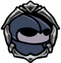

Husk Guard
 The remains of a great Hallownest Crossguard, animated by a strange force. Instinct still drives it to guard its post against intruders.Larger and stronger than their brothers, these bugs are still forced to steal their weapons from the remains of other creatures. They do not roam or hunt, forever standing guard and lashing out at anything that wanders near.
The remains of a great Hallownest Crossguard, animated by a strange force. Instinct still drives it to guard its post against intruders.Larger and stronger than their brothers, these bugs are still forced to steal their weapons from the remains of other creatures. They do not roam or hunt, forever standing guard and lashing out at anything that wanders near.

x 45
x 54
 x 10
x 10The Husk Guard is a large ground based enemy found only within the Forgotten Crossroads. It wields a large club, and is likely to be the first encounted enemy which can deal two masks of damage in one hit.

 On noticing the player, the Husk Guard will first approach to close range, before performing one of its two attacks.Its close range attack starts with by raising the club above its head, before bringing it down quickly in front of itself, dealing two masks of damage if it hits the player.For its long range attack, the Husk Guard hops backwards, creating a shockwave the travels both forwards and backwards from where it lands. The shockwave only deals one mask of damage.
Before the Husk Guard attacks, hit it once before jumping back immediately to avoid a potential hit from its club.If the attack was instead a shockwave attack, jump back over the shockwave towards the Husk Guard to land another attack, before jumping back again.It's best to avoid trying any fancy moves with the Husk Guard, such as nail jumping on it, which puts oneself at risk of getting hit by its club as it swings it down over its head. Simple hit and run attacks work best.
On noticing the player, the Husk Guard will first approach to close range, before performing one of its two attacks.Its close range attack starts with by raising the club above its head, before bringing it down quickly in front of itself, dealing two masks of damage if it hits the player.For its long range attack, the Husk Guard hops backwards, creating a shockwave the travels both forwards and backwards from where it lands. The shockwave only deals one mask of damage.
Before the Husk Guard attacks, hit it once before jumping back immediately to avoid a potential hit from its club.If the attack was instead a shockwave attack, jump back over the shockwave towards the Husk Guard to land another attack, before jumping back again.It's best to avoid trying any fancy moves with the Husk Guard, such as nail jumping on it, which puts oneself at risk of getting hit by its club as it swings it down over its head. Simple hit and run attacks work best.
Husk Guards can be found the following areas: